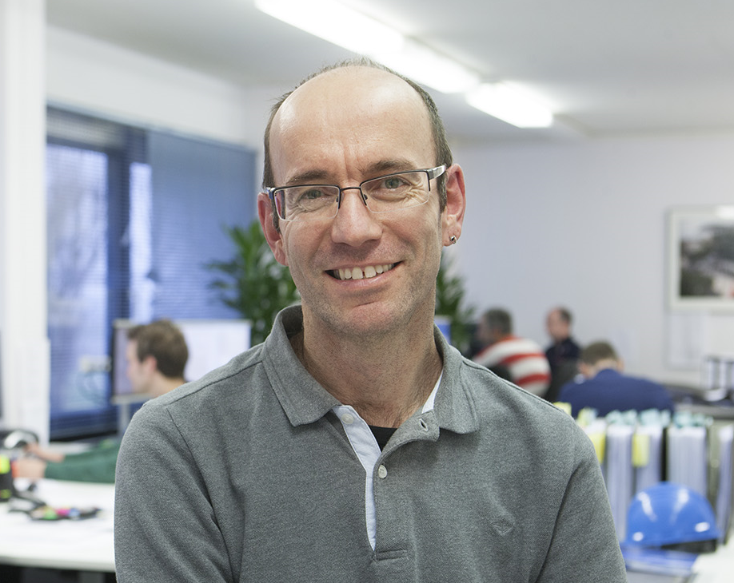

Mijn naam is Wim Vergouwen ben 56 jaar. Ik ben getrouwd met Angela en heb 2 kinderen, een dochter van 26 jaar en een zoon van 25 jaar.
Momenteel werk ik als technisch tekenaar voor Kok Staalbouw in Heerle ( West-Brabant). Hier modeleer ik in 3D staalconstructies voor
verschillende projecten. Dit doe ik met TEKLA software. Van dit model maak ik vervolgens semi-automatisch overzichttekeningen, werkplaatstekeningen
en productie-lijsten.
In mijn vrij tijd ga ik graag wandelen en fietsen. Ik hou van spannende boeken lezen en klus graag. Verder vind ik reizen erg leuk en bezoek graag
andere landen.